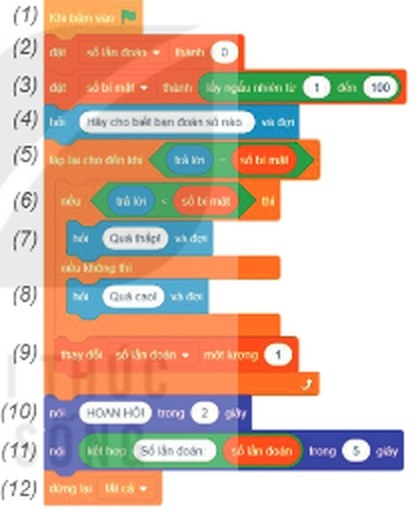
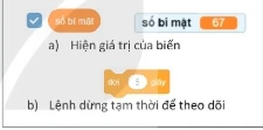
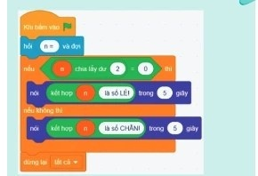
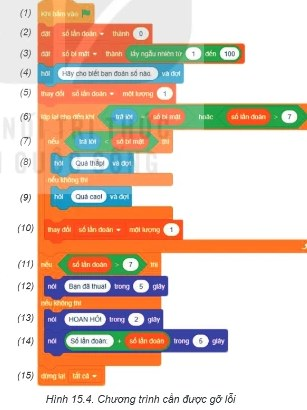
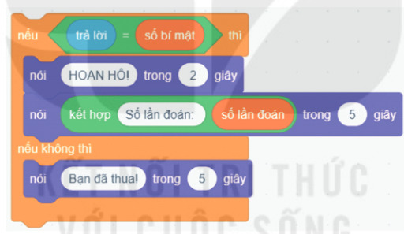

Dành cho giáo viên
Theo dõi lớp
| Học sinh / Nhóm | Đã nộp | Cập nhật |
|---|
Bước 1
1 Khởi động
Khởi động Gỡ lỗi là làm những gì?
An: Chúng ta đã tạo ra một chương trình máy tính trong Bài 14 và thế là tớ đã biết lập trình.
Khoa: Chưa xong đâu, chúng ta cần phải thực hiện một việc nữa, đó là gỡ lỗi.
An: Gỡ lỗi là làm những gì? Bạn hãy hướng dẫn cụ thể hơn cho tớ nhé.
Khoa: Chưa xong đâu, chúng ta cần phải thực hiện một việc nữa, đó là gỡ lỗi.
An: Gỡ lỗi là làm những gì? Bạn hãy hướng dẫn cụ thể hơn cho tớ nhé.
Ghi bài Khởi động
Sau khi thầy cô chốt, em chép nội dung dưới đây vào vở.
Bước 2 · Hình thành kiến thức mới
2.1 Kiểm thử và phân loại lỗi
Hoạt động 1, 2 Đếm số lần đoán
Hoạt động 1. Trong trò chơi Đoán số ở Bài 14, ai đoán đúng số bí mật với ít lần đoán hơn sẽ là người thắng cuộc. Ở chương trình trong Hình 15.1, biến số lần đoán được bổ sung để đếm số lần người chơi đoán và thông báo giá trị này khi người chơi đoán đúng số bí mật. Trước khi chia sẻ trò chơi của mình, em quyết định kiểm tra xem trò chơi có hoạt động tốt không. Hãy cho biết kết quả của việc kiểm tra đó bằng cách mô tả tình huống chương trình chạy không đúng kịch bản (nếu có).
Hoạt động 2. Em hãy cho biết, chương trình đã cho trong Hình 15.1 không hoạt động được hay nó có hoạt động nhưng đã thực hiện không đúng kịch bản.
Hoạt động 2. Em hãy cho biết, chương trình đã cho trong Hình 15.1 không hoạt động được hay nó có hoạt động nhưng đã thực hiện không đúng kịch bản.

Chương trình Hình 15.1 trên mô phỏng (các lệnh được đánh số như SGK). Hãy chạy thử và tự đếm số lần mình đoán, hoặc bấm 🧪 Kiểm thử để máy chạy ba tình huống với số bí mật là 40.
Đọc hiểu a) Kiểm thử · b) Phân loại lỗi
Đọc mục 1 (SGK trang 86–87). Theo kịch bản, trò chơi sẽ thông báo số lần đoán khi người chơi đoán đúng số bí mật. Tuy nhiên, khi chạy thử chương trình, em sẽ thấy số lần đoán mà máy tính hiển thị luôn kém số lần thực tế mà người chơi đã đoán một đơn vị. Việc chạy thử chương trình để kiểm tra (còn gọi là kiểm thử) nhằm phát hiện những tình huống bất thường (được gọi là lỗi) khi thực hiện chương trình. Các lỗi cần được loại bỏ trước khi chương trình được coi là sản phẩm hoàn chỉnh và có thể chia sẻ với người khác.
Khi chạy thử, em nhận ra rằng chương trình vẫn hoạt động vì máy tính vẫn hỏi và trả lời theo sự điều khiển của các khối lệnh. Tuy nhiên nó thực hiện không đúng kịch bản vì số lần đoán được hiển thị không đúng với số lần thực tế mà người chơi đã đoán. Có hai loại lỗi: 1) Lỗi cú pháp xảy ra khi lệnh viết sai so với quy tắc của ngôn ngữ lập trình, làm cho chương trình không hoạt động; 2) Lỗi lôgic (hay lỗi ngữ nghĩa) xảy ra khi các câu lệnh trong chương trình tuy được viết đúng cú pháp nhưng thực hiện không đúng kịch bản như trong chương trình của trò chơi Đoán số.
Khi chạy thử, em nhận ra rằng chương trình vẫn hoạt động vì máy tính vẫn hỏi và trả lời theo sự điều khiển của các khối lệnh. Tuy nhiên nó thực hiện không đúng kịch bản vì số lần đoán được hiển thị không đúng với số lần thực tế mà người chơi đã đoán. Có hai loại lỗi: 1) Lỗi cú pháp xảy ra khi lệnh viết sai so với quy tắc của ngôn ngữ lập trình, làm cho chương trình không hoạt động; 2) Lỗi lôgic (hay lỗi ngữ nghĩa) xảy ra khi các câu lệnh trong chương trình tuy được viết đúng cú pháp nhưng thực hiện không đúng kịch bản như trong chương trình của trò chơi Đoán số.
Câu hỏi SGK trang 87
Ghi bài 1. Kiểm thử và phân loại lỗi
Sau khi thầy cô chốt, em chép nội dung dưới đây vào vở.
Bước 2 · Hình thành kiến thức mới
2.2 Phát hiện lỗi và sửa lỗi lôgic
Hoạt động 3 Gỡ lỗi
Xét tình huống máy tính hiển thị số lần đoán không đúng với số lần đoán thực tế của người chơi. Em hãy trả lời các câu hỏi: 1. Theo kịch bản, biến số lần đoán sẽ thay đổi trong tình huống nào? 2. Những khối lệnh nào làm thay đổi biến số lần đoán? 3. Có điều gì khác nhau giữa kịch bản và những khối lệnh tương ứng?
Đọc hiểu a) Phát hiện lỗi lôgic · b) Sửa lỗi
Đọc mục 2 (SGK trang 87–88). Hầu hết các ngôn ngữ lập trình đều có chức năng chỉ rõ lỗi cú pháp; ngôn ngữ lập trình trực quan thậm chí còn hạn chế những tình huống xảy ra lỗi cú pháp. Vì vậy lỗi cú pháp dễ dàng được phát hiện và sửa chữa. Tuy nhiên, với lỗi lôgic, việc xác định lệnh nào gây ra lỗi và nó đã hoạt động thế nào để tạo ra lỗi ấy không phải lúc nào cũng đơn giản. Có hai cách thường được sử dụng để phát hiện lỗi lôgic.
Cách thứ nhất: Dựa vào phân tích lôgic để tìm lỗi. Tập trung vào những khối lệnh liên quan đến lỗi và so sánh với kịch bản xem chúng có được thực hiện đúng yêu cầu hay không. Trong chương trình trò chơi Đoán số, lỗi được thể hiện ở việc chương trình hiển thị sai giá trị của số lần đoán. Các khối lệnh liên quan đến biến này là khởi tạo giá trị (2), thay đổi giá trị (9) và hiển thị giá trị (11). Theo kịch bản, số lần đoán cần phải tăng 1 đơn vị mỗi khi người chơi nhập một giá trị số (đoán). Điều này xảy ra ở các câu lệnh (4), (7) và (8). Tuy nhiên, có thể thấy rằng, mặc dù (9) tăng giá trị của số lần đoán sau khi (7) hoặc (8) được thực hiện, nhưng không có lệnh nào như thế sau khối lệnh (4) cả. Theo cách này, việc phát hiện vị trí xuất hiện lỗi trong chương trình được tìm kiếm bằng cách suy luận lôgic, bắt đầu từ những khối lệnh thực hiện không đúng kịch bản. Hạn chế việc tìm lỗi theo cách đó dò từng lệnh.
Cách thứ hai: Chạy thử với dữ liệu mẫu để dò lỗi. Vì là người lập trình, em có thể cho hiện giá trị các biến số bí mật và số lần đoán bằng cách đánh dấu ☑ vào bên cạnh tên biến đó trong nhóm “Các biến số” (Hình 15.2a). Chạy chương trình với một số dữ liệu đầu vào dự kiến. Chẳng hạn, em có thể nhập số bí mật ngay trong lần đoán đầu tiên. Khi đó, lẽ ra số lần đoán cần nhận giá trị 1 thì nó vẫn chỉ mang giá trị 0. Từ đó, em nhận thấy rằng lỗi xảy ra do không tăng giá trị của số lần đoán sau lần nhập giá trị đầu tiên của người chơi ở lệnh (4). Lưu ý: Chương trình có thể chạy theo từng bước bằng cách chèn lệnh “đợi… giây” (Hình 15.2b) vào những vị trí cần quan sát dữ liệu. Theo cách này, người lập trình có thể kết hợp chạy chương trình từng bước với việc theo dõi giá trị của các biến, so sánh chúng với các giá trị tương ứng được tính theo cách thủ công để phát hiện câu lệnh nào gây ra lỗi và cách nó hoạt động để gây ra lỗi đó.
b) Sửa lỗi. Khi đã biết vị trí câu lệnh xảy ra lỗi trong chương trình và cách thức câu lệnh đó tạo ra lỗi, em có thể đưa ra những cách sửa lỗi phù hợp với yêu cầu. Chẳng hạn, tăng giá trị số lần đoán lên 1 đơn vị sau lần đoán đầu tiên bằng cách bổ sung lệnh (4a) “thay đổi số lần đoán một lượng 1” giống như lệnh (9) vào sau lệnh (4).
Cách thứ nhất: Dựa vào phân tích lôgic để tìm lỗi. Tập trung vào những khối lệnh liên quan đến lỗi và so sánh với kịch bản xem chúng có được thực hiện đúng yêu cầu hay không. Trong chương trình trò chơi Đoán số, lỗi được thể hiện ở việc chương trình hiển thị sai giá trị của số lần đoán. Các khối lệnh liên quan đến biến này là khởi tạo giá trị (2), thay đổi giá trị (9) và hiển thị giá trị (11). Theo kịch bản, số lần đoán cần phải tăng 1 đơn vị mỗi khi người chơi nhập một giá trị số (đoán). Điều này xảy ra ở các câu lệnh (4), (7) và (8). Tuy nhiên, có thể thấy rằng, mặc dù (9) tăng giá trị của số lần đoán sau khi (7) hoặc (8) được thực hiện, nhưng không có lệnh nào như thế sau khối lệnh (4) cả. Theo cách này, việc phát hiện vị trí xuất hiện lỗi trong chương trình được tìm kiếm bằng cách suy luận lôgic, bắt đầu từ những khối lệnh thực hiện không đúng kịch bản. Hạn chế việc tìm lỗi theo cách đó dò từng lệnh.
Cách thứ hai: Chạy thử với dữ liệu mẫu để dò lỗi. Vì là người lập trình, em có thể cho hiện giá trị các biến số bí mật và số lần đoán bằng cách đánh dấu ☑ vào bên cạnh tên biến đó trong nhóm “Các biến số” (Hình 15.2a). Chạy chương trình với một số dữ liệu đầu vào dự kiến. Chẳng hạn, em có thể nhập số bí mật ngay trong lần đoán đầu tiên. Khi đó, lẽ ra số lần đoán cần nhận giá trị 1 thì nó vẫn chỉ mang giá trị 0. Từ đó, em nhận thấy rằng lỗi xảy ra do không tăng giá trị của số lần đoán sau lần nhập giá trị đầu tiên của người chơi ở lệnh (4). Lưu ý: Chương trình có thể chạy theo từng bước bằng cách chèn lệnh “đợi… giây” (Hình 15.2b) vào những vị trí cần quan sát dữ liệu. Theo cách này, người lập trình có thể kết hợp chạy chương trình từng bước với việc theo dõi giá trị của các biến, so sánh chúng với các giá trị tương ứng được tính theo cách thủ công để phát hiện câu lệnh nào gây ra lỗi và cách nó hoạt động để gây ra lỗi đó.
b) Sửa lỗi. Khi đã biết vị trí câu lệnh xảy ra lỗi trong chương trình và cách thức câu lệnh đó tạo ra lỗi, em có thể đưa ra những cách sửa lỗi phù hợp với yêu cầu. Chẳng hạn, tăng giá trị số lần đoán lên 1 đơn vị sau lần đoán đầu tiên bằng cách bổ sung lệnh (4a) “thay đổi số lần đoán một lượng 1” giống như lệnh (9) vào sau lệnh (4).

Thử trên mô phỏng ở mục 2.1: đánh dấu ☑ hai biến trong nhóm Các biến số để hiện giá trị trên sân khấu; bật Chạy từng lệnh (thay cho việc chèn lệnh đợi) và bấm ⏭ Lệnh tiếp để quan sát số lần đoán sau mỗi lệnh. Sau đó sửa lỗi: nháy vạch ▸ ngay dưới lệnh (4), thêm khối thay đổi số lần đoán một lượng 1, rồi bấm 🧪 Kiểm thử lại.
Câu hỏi SGK trang 89
Em hãy gỡ lỗi đoạn chương trình xác định một số n được nhập từ bàn phím là số chẵn hay số lẻ được cho trong Hình 15.3.

Ghi bài 2. Phát hiện lỗi và sửa lỗi lôgic
Sau khi thầy cô chốt, em chép nội dung dưới đây vào vở.
Bước 2 · Thực hành
2.3 Thực hành: Gỡ lỗi
Nhiệm vụ Trò chơi Đoán số tối đa 7 lần
Giả sử trong trò chơi Đoán số, không ai được đoán quá 7 lần. Em hãy gỡ lỗi chương trình trò chơi Đoán số trong Hình 15.4 (đã được bổ sung chức năng thông báo người chơi thua cuộc nếu vẫn đoán sai ở lần thứ 7).
a) Kiểm thử và phát hiện lỗi. Bước 1. Chạy thử chương trình: với tình huống đoán đúng số bí mật sau không quá 7 lần đoán, thông báo hiển thị số lần đoán không xuất hiện cụm từ “Số lần đoán:” như trong chương trình; với tình huống đoán sai, chương trình không kết thúc và báo thua ngay sau lần đoán sai thứ 7 mà vẫn cho đoán thêm một lần nữa. Bước 2. Phát hiện lỗi. Gợi ý: trong tình huống thứ nhất, lỗi xảy ra ở câu lệnh hiển thị: phép toán ghép nối các chữ là “kết hợp…” chứ không phải dấu “+”; trong tình huống thứ hai, lỗi xảy ra ở biểu thức điều kiện: vì mỗi người không đoán quá 7 lần, nên vòng lặp (6) – (10) sẽ kết thúc khi số lần đoán bằng 7. Ngoài ra, sau 7 lần đoán, vẫn có thể xảy ra cả hai khả năng đoán đúng hoặc đoán sai. Vì vậy, số lần đoán không cho biết kết quả đoán đúng hay sai.
b) Sửa các lỗi phát hiện được. Điều kiện trong câu lệnh (6) cần đổi thành ⟨trả lời = số bí mật⟩ hoặc ⟨số lần đoán > 6⟩ (hoặc ⟨số lần đoán = 7⟩). Điều kiện rẽ nhánh ở lệnh (11) cần được chỉnh sửa thành ⟨trả lời = số bí mật⟩. Sửa biểu thức trong lệnh hiển thị (14). Khi đó, các lệnh (11) đến (14) như Hình 15.5.
a) Kiểm thử và phát hiện lỗi. Bước 1. Chạy thử chương trình: với tình huống đoán đúng số bí mật sau không quá 7 lần đoán, thông báo hiển thị số lần đoán không xuất hiện cụm từ “Số lần đoán:” như trong chương trình; với tình huống đoán sai, chương trình không kết thúc và báo thua ngay sau lần đoán sai thứ 7 mà vẫn cho đoán thêm một lần nữa. Bước 2. Phát hiện lỗi. Gợi ý: trong tình huống thứ nhất, lỗi xảy ra ở câu lệnh hiển thị: phép toán ghép nối các chữ là “kết hợp…” chứ không phải dấu “+”; trong tình huống thứ hai, lỗi xảy ra ở biểu thức điều kiện: vì mỗi người không đoán quá 7 lần, nên vòng lặp (6) – (10) sẽ kết thúc khi số lần đoán bằng 7. Ngoài ra, sau 7 lần đoán, vẫn có thể xảy ra cả hai khả năng đoán đúng hoặc đoán sai. Vì vậy, số lần đoán không cho biết kết quả đoán đúng hay sai.
b) Sửa các lỗi phát hiện được. Điều kiện trong câu lệnh (6) cần đổi thành ⟨trả lời = số bí mật⟩ hoặc ⟨số lần đoán > 6⟩ (hoặc ⟨số lần đoán = 7⟩). Điều kiện rẽ nhánh ở lệnh (11) cần được chỉnh sửa thành ⟨trả lời = số bí mật⟩. Sửa biểu thức trong lệnh hiển thị (14). Khi đó, các lệnh (11) đến (14) như Hình 15.5.

Gỡ lỗi trên mô phỏng: bấm 🧪 Kiểm thử để xem tình huống nào sai; sửa số trong ô (ví dụ 7 → 6); bấm × trên một phép toán để bỏ nó, rồi bấm ▾ để đặt phép toán đúng vào ô; dùng ✕ và các vạch ▸ để chuyển lệnh sang nhánh khác. Kiểm thử lại cho đến khi đạt cả 4 tình huống.

Ghi bài 3. Thực hành
Sau khi thầy cô chốt, em chép nội dung dưới đây vào vở.
Bước 3
3 Luyện tập
Luyện tập Một cách sửa lỗi khác
Em hãy chọn một cách khác với cách đã nêu trong phần b) Sửa lỗi của mục 2 để sửa lỗi của chương trình được cho trong Hình 15.1.
Ghi bài Luyện tập
Sau khi thầy cô chốt, em chép nội dung dưới đây vào vở.
Bước 4
4 Vận dụng
Vận dụng Máy tính đoán số
Đổi vai trò máy tính và người chơi trong trò chơi Đoán số. Em chọn một số nguyên trong khoảng từ 1 đến 120 và viết số đó ra giấy. Máy tính sẽ hiển thị một số mà em phải trả lời bằng các phím “d”, “c” hoặc “t” tương ứng với tình huống số máy tính hiển thị đúng, cao hơn hay thấp hơn số em đã chọn. Hãy viết chương trình để sau một số bước, càng ít càng tốt, máy tính tìm ra số em đã chọn. Chạy thử, phát hiện và sửa các lỗi của chương trình đó.
Gợi ý cho phần kiểm thử tự động: mỗi câu hỏi của máy nên chứa số máy đoán, ví dụ kết hợp “Có phải số ” (đoán); máy kiểm thử sẽ tự trả lời d, c, t.
Gợi ý cho phần kiểm thử tự động: mỗi câu hỏi của máy nên chứa số máy đoán, ví dụ kết hợp “Có phải số ” (đoán); máy kiểm thử sẽ tự trả lời d, c, t.
Ghi bài Vận dụng
Sau khi thầy cô chốt, em chép nội dung dưới đây vào vở.